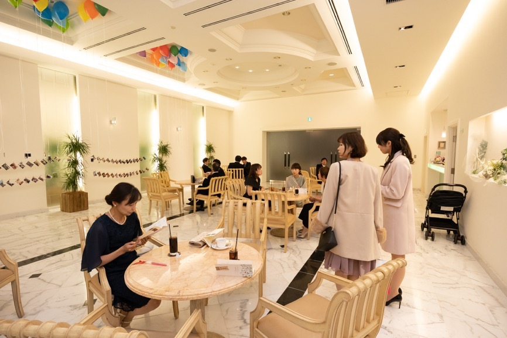
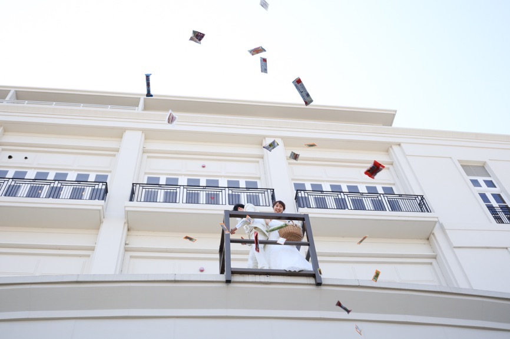
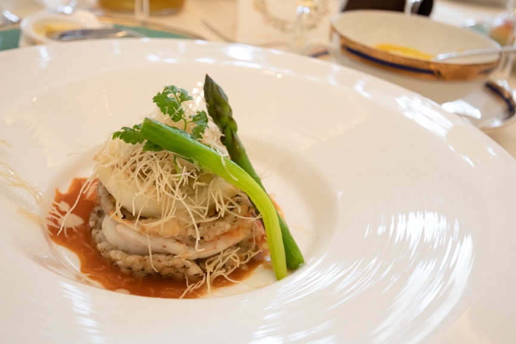
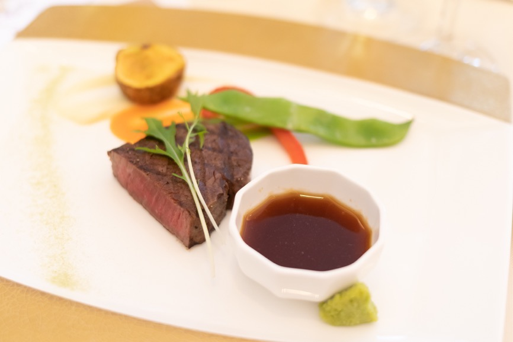
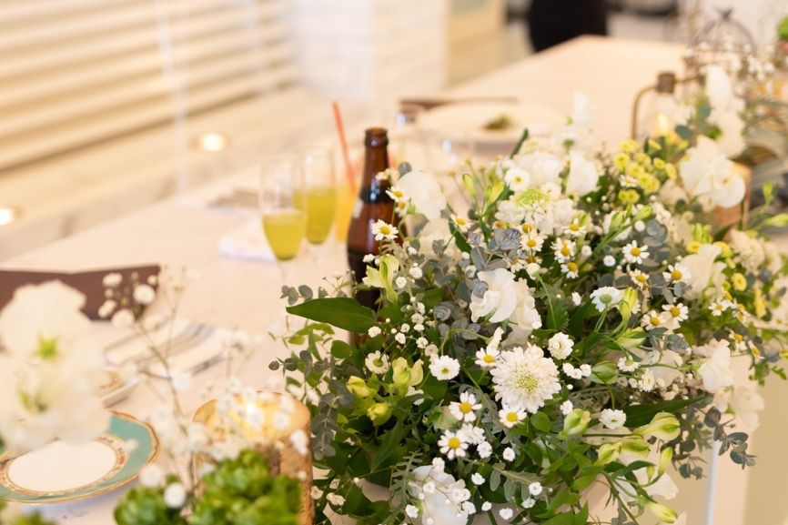
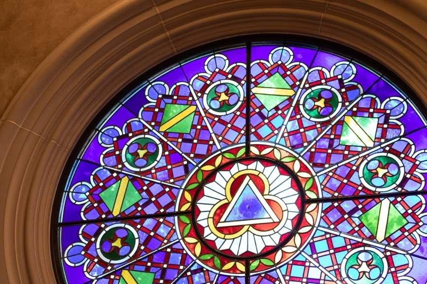
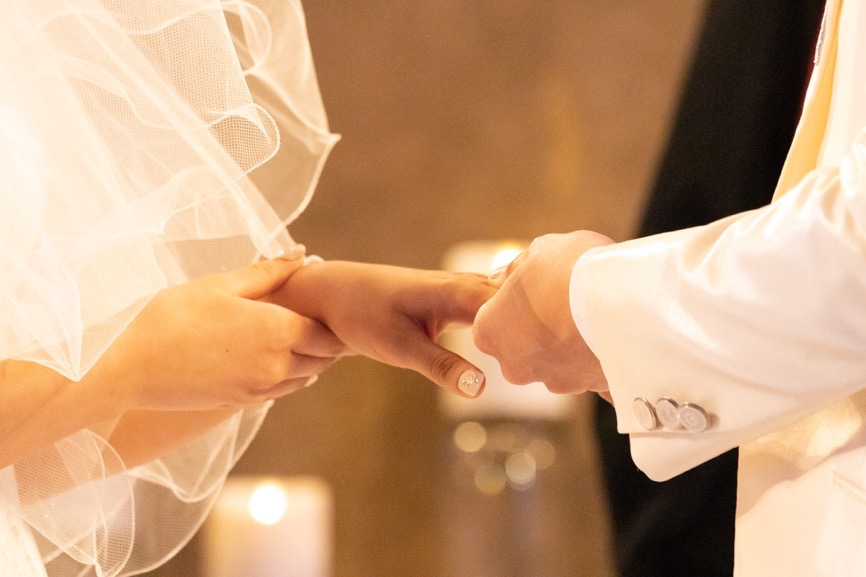

| Canon EOS Kiss Mで撮ったウェディングフォト: ミラーレスでもこんなに撮れる！ | |
| 旅路ゆう | |
| (2019) | |
広角ズーム EF-M11-22mm F4-5.6 IS STM
EF-M11-22mm F4-5.6 IS STMで撮った写真
ウェディングフォトという写真ジャンル
ウェディングフォトは難しいと言われます。
実際、僕もやってみてかなり大変な思いをしました。
その理由は、ウェディングフォトが「カメラの総合格闘技」だからだと思います。
僕の持論ですが、写真のジャンルというのは以下の5つのジャンルの組み合わせで表現できます。
・ポートレート
・スポーツ
・風景
・スナップ
・テーブルフォト
そして、ウェディングフォトは風景を除いた4つのジャンルの要素を含んでいます。
ポートレートではいかに人物を魅力的に撮るか。
スポーツでは決定的瞬間をいかに収めるか。
スナップではその場の雰囲気をいかにありのままに伝えるか。
テーブルフォトでは食べ物や小物をいかに魅力的に撮るか。
ということが重要視されます。
これらに加えて、結婚式では照明がめまぐるしく変化したり、場面が大きく変わったりします。
でも、基本を抑えれば実はそんなに気負わなくてもいい写真を撮ることは十分可能です。
今回は、僕のいとこの結婚式での初ウェディングフォトをご紹介します。
いとこの結婚式で使った機材
初ウェディングフォトということで、機材だけは一丁前に揃えていきました。
参考にしたのは、職場にいる元プロブライダルカメラマンの助言。
各所から機材を借りてかなりの重装備になりました。
それでも意外と軽量・コンパクトに収まったのはシステムをミラーレスにしたから。
今回持っていった機材とコメントを書いていきます！
ミラーレスカメラ Canon EOS Kiss M ×2台
失敗の許されないブライダルでは、長年の実績のある一眼レフが根強い人気を持っています。
そんな中、サブカメラマンとして自由に撮ることを許された僕は、愛機のKiss Mを持っていきました。
このカメラは式の2ヶ月前に買ったばかりでしたが、大のお気に入りで確実に僕のカメラライフを豊かにしてくれています。
一番のメリットは軽量でコンパクトであること。
オリンパスやパナソニックのマイクロフォーサーズと遜色ないサイズ感で、より大きなイメージセンサーを持っているので画質を必要十分。
デザインは一眼レフの精悍な印象を継承しつつ、曲線を帯びたフォルムで誰が持っても違和感がありません。
さらにカスタマイズすれば上級機さながらの操作性を持ち合わせており、すごいポテンシャルを秘めています。
僕は完全にKiss Mの虜です。
1つ重大な欠点を挙げるとすれば、電池持ちが悪いこと。
ミラーレス特有の消費電力問題に加えて、小さなバッテリーを積んでいるので1日中撮影する場合はバッテリーが3つはほしいです。
この問題はKindleでも出版した「房総半島の大回り乗車」のときに把握していたので、純正バッテリー2つと、互換バッテリー2つの計4つのバッテリーを持参することで解決しました。
そして、ウェディングフォトでいい写真を撮りたいときにこだわってほしいのが、カメラを2台以上用意すること。
僕は職場にいる元ブライダルカメラマンの熱いアドバイスを元に、同じKiss Mをもう一台借りていきました。
これが本当に大活躍。
結婚式の撮影では、何度もレンズを交換している暇などないので、望遠レンズと単焦点レンズのついたボディをとっかえひっかえしながら撮るような場面ばかりでした。
欲を言えば、3台あると最高でした。
ボディを替えたときの撮影のスムーズさや編集のことを考えると、同じボディを用意するのがベストですが、違うボディでも構いません。
一眼レフとコンデジのような組み合わせでもいいので、2台以上あると本当に心強いです。
広角ズーム EF-M11-22mm F4-5.6 IS STM
このレンズのためにEOS Mシステムに乗り換えたと言っても過言ではない素晴らしいレンズ。
最近は常にこのレンズをボディにつけています。
このレンズの魅力は、広角レンズではありえないほどのコンパクトさと解像力を両立していること。
さらに手ぶれ補正を内蔵しており、夜景の撮影もバッチリです。
ウェディングフォトでは、主にスナップで活躍しました。
新郎新婦メインの写真が多い中、その周りの参加者もばっちり写すことができます。
室内では空間を広く見せることもできますし、テーブルごとの集合写真でも重宝しました。
また、プロのカメラマンが広角レンズを常に付けているのは稀なので差別化にも役立ちます。
準広角単焦点 EF-M22mm F2 STM

キットレンズとして購入し、EF-M11-22mm F4-5.6 IS STMを購入するまで大変お世話になったレンズ。
おでかけのときに1本だけレンズを持っていくなら、コンパクトで高画質なこのパンケーキレンズがベスト。
フルサイズ換算35mmとなるこのレンズは、スナップだけでなく、ポートレートやテーブルフォト、風景にも十分対応できます。
今回は、結婚式と披露宴ではほとんど使いませんでしたが、カメラ1台で挑んだ2次会では軽快に撮ることができて、このレンズの良さを実感しました。
標準単焦点 EF35mm F2 IS USM
これまた職場の元ブライダルカメラマンに説得されて持ち込んだレンズ。
本当ならEF-M32mm F1.4 STMを持っていくのがベストだと思いますが、あいにくまだ購入できていなかったのでマウントアダプターを介してこのレンズを使うことにしました。
一眼レフのボディではいいバランスとなるこのレンズも、Kiss Mとの組み合わせでは少しアンバランス。
でもフルサイズに合わせて設計された重厚感のあるレンズを付けていると、いい写真が撮れそうな気がして気分がかなりアガったのも事実。
ボケを活かしたアーティスティックな写真や、ここぞというときのポートレートでいい写真を撮ってくれました。
手ぶれ補正も搭載しているので、微妙なブレが起こりにくいのも嬉しいです。
望遠ズーム EF70-200mm F4L IS USM
ウェディングフォトの機材と言えば、Canonの白レンズというイメージがあります。
そのイメージの通り、ウェディングフォトでは望遠レンズが欠かせません。
王道はF2.8通しですが、ボディとのバランスを考えてF4通しに落ち着きました。
もちろん、購入する余裕はないのでこれもレンタルです。
1段分のF値の違いは、暗い場面で実感しましたが、ボケ量などはそこまで気になりませんでした。
それよりも軽量コンパクトなことで機動力が上がったことのほうが僕としてはメリットが大きかったです。
後述しますが、F2.8の望遠レンズを買うくらいならストロボに投資するほうが賢明です。
マウントアダプター EF-EOS M
EOS Mシステムは一通りのレンズが揃っているとはいえ、ハイアマチュアからプロユース向けのレンズはほぼ皆無です。
それでもEOS Mで本格的な写真を撮りたいという人の味方になってくれるのがマウントアダプター。
フルサイズレンズを使用すると画角は狭まりますが、望遠レンズならさほど気にならない場合が多いでしょう。
システムとして巨大化してしまったり、一眼レフのような高速AFができなかったりというハンデはありますが、EOS M愛好者には救いとなってくれる機材です。
スピードライト 430EX Ⅱ
先輩から譲り受けたクリップオンストロボです。
実は、昔中古で購入して室内撮影やコンパニオン撮影で使っていたのですが、光を補うよりも自然光を単焦点レンズで捉えることに楽しさを覚えてしまって一度手放しています。
今回、先輩にウェディングフォトを撮ると伝えたところ、快く貸してくれたので使い倒しました。
EOS Mにマッチするストロボは今の所ないので、一眼レフ用のストロボを使うことになり、正直バランスは最悪です。
しかし、室内撮影ではこんなにストロボが使えるのかと本当にびっくりしました。
披露宴での単焦点以外の写真はほとんどがストロボの天井バウンスで撮ったものです。
特に驚いたのが、10m以上の距離から望遠レンズで撮っても綺麗に写せたこと。
先輩の「写真はレンズじゃなくて光だ」という名言(?)はその通りだと思いました。
もし、予算的に厳しくてボディやレンズが揃えられない場合でも、標準ズーム（または単焦点レンズ）とストロボだけは絶対に用意してください！
EOS Kiss Mで撮ったウェディングフォト
ここからはレンズ別に写真を紹介していきます。
結婚式でこのレンズを使うとこんな写真が撮れるというのは案外わからなかったりするので、とても役に立つと思います。
機材選びの参考にどうぞ。
EF-M11-22mm F4-5.6 IS STMで撮った写真
会場の様子を伝えるにはもってこいなのが広角ズーム。
要所要所で引きの画を撮っておくと写真を見返したときのアクセントにもなり、喜ばれること間違いなし。



チャペルでは、プロのカメラマンは基本的に縦横無尽動き回っていわゆる定番の写真を抑えていきます。
そこでサブカメラマンはあえて参加者視点の強い写真を残しておくといいでしょう。



開放的なガーデンウェディングでは参加者が散らばってしまうので標準ズームだと開放感が表現できません。
そこで広角ズームの出番。
全部まとめて写し込んで幸せムードをそのまま写真にしてしまいましょう。

屋内の披露宴の光が弱いのでストロボを有効活用しました。
同じ場面で望遠ズームや単焦点でも写真を撮っていますが、適宜広角ズームでも写真を撮り、記録的な要素の強い写真も残しています。
祖母の泊まったホテルで一休み。
室内ではやはり大活躍で、いわるゆ標準ズームとされる15-45mmよりも個人的に気に入っています。
EF-M22mm F2 STMで撮った写真

必要性は感じませんでしたが、とっても小さいので備えあれば憂い無しと思って忍ばせてきたレンズです。
2次会でしか使いませんでしたが、荷物を減らしたいときにはこの上なく便利。
もっとフランクな撮影を頼まれたときはこのパンケーキレンズ1本でもそれなりの撮影ができると思います。
EF35mm F2 IS USMで撮った写真
フォトジェニックな写真を撮るときに使用。
単焦点レンズはボケ量だけでは説明できない感情を揺さぶるような写真が撮れるのが魅力です。
単焦点レンズを多用するブライダルカメラマンは少ないのであえてお気に入りの単焦点1本で撮影に突撃するのもアリだと思います。






特別な加工をしたわけではありませんが、見返してみても濁りのないスッキリとした印象を受けます。
多少の技術の不足も誤魔化せるので、僕のようなアマチュアがそれっぽい写真を撮るときには心強い味方となってくれます。
EF70-200mm F4L IS USMで撮った写真


ウェディングフォトといえば望遠レンズですよね。
ウェディングフォトでイメージする「これこれ！」という写真を撮るには欠かせません。
このような写真はプロがばっちり抑えてくれているので必要最小限にとどめ、プロとは違う視点から撮るのが、感謝される写真の撮り方になってきます。
肖像権を気にすると望遠ズームで撮った顔のアップは載せられないので、ここで終了です。
披露宴でも同じように撮りましたが、ストロボを使うと明るく撮れるだけでなくブレも減らせるので本当に助かりました。
1人でウェディングフォトを完結させるなら望遠は絶対に必要ですね。
まとめ
いとこの結婚式で使った機材と写真を紹介してきました。
実は今回、3週間前までプロがいなくて1人で全部撮るのだと思い込んでいて、緊張で吐きそうでした。
ところが、よく聞いてみると「プロ以外にお願いしているのは1人」ということで肩の荷が降りました。
だからと言って手を抜いたわけではなく、大好きないとこのために、自分の撮った写真だけでもウェディングフォトが成立するように努力しました。
最後に、今回の経験を元に任された役回り別に必要な機材を考察していこうと思います。
・式も楽しみつつ、写真も撮ってというスタンス
よくあるのがこのタイプ。
そういえば、あの人カメラやってたなというのを思い出して、軽くお願いされる形です。
カメラを持っている人にわざわざお願いしているということは、「スマホとは一味違う写真」を求めているはず。
かと言って望遠レンズやストロボは大袈裟すると思います。
そこでオススメなのが、単焦点レンズ1本で勝負すること。
フルサイズ換算で焦点距離35~85mmあたりでF2より明るいものを使うと、やっぱりカメラは違うなあと思わせることができます。
いい場面を確実に撮るのはプロに任せて、最小限の労力で「おっ」と思わせる写真を撮るのがポイントです。
・いい写真を撮ってというスタンス
一番困るのがこのタイプ。
恐らく、カメラをあまり知らない人はプロのような写真を期待していることが多いです。
まずはどの程度のクオリティが求められているのか聞き出しましょう。
この場合もプロとかち合う写真を撮っても意味はありません。
カメラが1台の場合の一番のオススメは、高倍率ズームとストロボという組み合わせ。
これならあまりお金をかけずに式や披露宴でそれっぽい写真を撮ることができます。
高倍率ズームはF値が大きいので、明るさはストロボで補っていく感じです。
余裕があれば、お気に入りの単焦点レンズも1本持っていくと喜ばれる写真を撮ることができます。
カメラが2台持てる場合は1台は高倍率ズームと単焦点、または標準ズームと望遠レンズという組み合わせがオススメ。
この組み合わせでもストロボがあると心強いです。
カメラ2台を使いこなすのは難しそうに思えますが、レンズ交換の手間が省けるので実は1台のときよりも撮りやすいです。
・プロにはお願いしていないから全部おまかせというスタンス
最も危険です。
まずは、素人に一任することのリスクを説明して、なんとかプロにお願いすることを説得しましょう。
それでも金銭的な問題などから1人で撮ることになってしまった場合は余念のない準備が必要になります。
まず、カメラは2台以上必須。
1台でも役目は務まりますが、実は利便性を上げることよりも1台が故障したときにも撮影を続行できるようにするというリスク回避の意味合いが強いです。
1台が故障したときには、レンズ交換をしながら撮ることになります。
したがって、マウントとフォーマットは確実に同じにしておく必要があります。
フルサイズとAPS-Cの組み合わせでは画角が全然違ってしまうのでオススメしません。
できるなら全く同じボディがベストです。
レンズは標準ズームと望遠ズームの2本がマスト。
フルサイズ換算で24-200mmくらいの焦点距離はカバーしたいです。
実際、プロのブライダルカメラマンは、24-70mm F2.8と70-200mm F2.8が標準装備のようです。
F2.8の方がベターですが、F4でも十分務まります。
広角ズームや単焦点レンズは余裕があればでOK。
先ほど紹介した2本のレンズがあれば、素人目にはプロと同じような写真が撮れるはずです。
さらに期待値を超えるような写真を撮りたいのなら、広角ズームや単焦点を持っていくといいでしょう。
使い方は本文で書いたとおりです。
しかし、気を付けなければいけないのはカメラ2台で余分にレンズを持っていく場合、レンズ交換という作業が発生するという点です。
この間、写真を撮ることができませんし、常に頭の片隅に「今、レンズ交換すべきか？」という邪念が居座ることになります。
こうなると撮影に集中できないこともあるので自信のない人にはオススメしません。
ストロボも必須。
いいレンズがあればストロボは不要、とはなりません。
室内ではどう頑張ってもシャッタースピードが遅くなってしまうので基本的にストロボは常時発光させることになります。
大光量なほど安心ですが、僕の場合は天井が少し高めに感じましたが、ガイドナンバー43でも全然だいじょうぶでした。
最後に周辺機器も忘れずに。
レンズの故障はあまり考えられませんが、バッテリー切れやカード容量不足は十分に考えられます。
一度、機材を書き出してみて、予備が用意できるか細かく確認しておくといいでしょう。
まとめがちょっと長くなってしまいました。
最後にウェディングフォトが大変そうな感じで締まってしまいましたが、カメラ好きならそれ以上に撮影の楽しさが勝ると思います。
一生に一度の機会、ぜひいい写真を提供してあげてください。
以上、旅路ゆうがお届けしました。
Kindleではカメラ関連だけでなく、旅行記や健康、グルメの本なども出版しているので、よかったら読んでみてください。